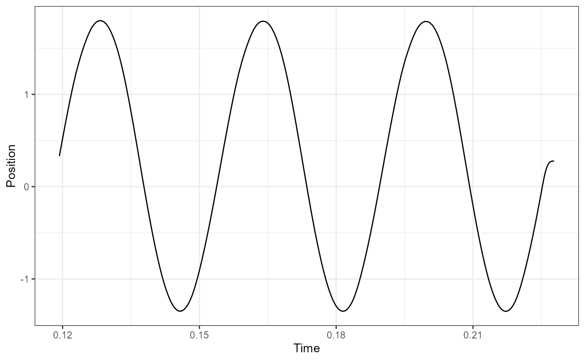
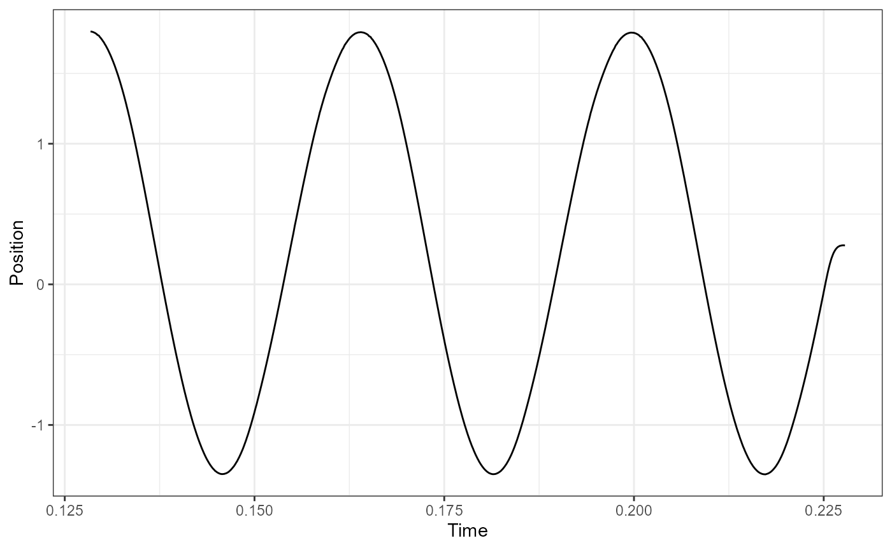

Analyzing work loop experiments in workloopR
Vikram B. Baliga
2021-07-28
Source:vignettes/Analyzing-workloops.Rmd
Analyzing-workloops.RmdThe function analyze_workloop() in workloopR allows users to evaluate the mechanical work and power output of a muscle they have investigated through work loop experiments.
To demonstrate analyze_workloop(), we will first load workloopR and use example data provided with the package. We’ll also load a couple packages within the tidyverse to help with data wrangling and plotting.
Visualize
We’ll now import the workloop.ddf file included with workloopR. Because this experiment involved using a gear ratio of 2, we’ll use fix_GR() to also implement this correction.
Ultimately, an object of classes workloop, muscle_stim, and data.frame is produced. muscle_stim objects are used throughout workloopR to help with data formatting and error checking across functions. Additionally setting the class to workloop allows our functions to understand that the data have properties that other experiment types (twitch, tetanus) do not.
## The file workloop.ddf is included and therefore can be accessed via
## system.file("subdirectory","file_name","package") . We'll then use
## read_ddf() to import it, creating an object of class "muscle_stim".
## fix_GR() multiplies Force by 2 and divides Position by 2
workloop_dat <-
system.file(
"extdata",
"workloop.ddf",
package = 'workloopR') %>%
read_ddf(phase_from_peak = TRUE) %>%
fix_GR(GR = 2)
summary(workloop_dat)
#> # Workloop Data: 3 channels recorded over 0.3244s
#>
#> File ID: workloop.ddf
#> Mod Time (mtime): 2021-07-28 11:04:01
#> Sample Frequency: 10000Hz
#>
#> data.frame Columns:
#> Position (mm)
#> Force (mN)
#> Stim (TTL)
#>
#> Stimulus Offset: 0.012s
#> Stimulus Frequency: 300Hz
#> Stimulus Width: 0.2ms
#> Stimulus Pulses: 4
#> Gear Ratio: 2
#>
#> Cycle Frequency: 28Hz
#> Total Cycles (L0-to-L0): 6
#> Amplitude: 1.575mmRunning summary() on a `muscle_stim shows a handy summary of file properties, data, and experimental parameters.
Let’s plot Time against Force, Position, and Stimulus (Stim) to visualize the time course of the work loop experiment.
To get them all plotted in the same figure, we’ll transform the data as they are being plotted. Please note that this is for aesthetic purposes only - the underlying data will not be changed after the plotting is complete.
scale_position_to_force <- 3000
workloop_dat %>%
# Set the x axis for the whole plot
ggplot(aes(x = Time)) +
# Add a line for force
geom_line(aes(y = Force, color = "Force"),
lwd = 1) +
# Add a line for Position, scaled to approximately the same range as Force
geom_line(aes(y = Position * scale_position_to_force, color = "Position")) +
# For stim, we only want to plot where stimulation happens, so we filter the data
geom_point(aes(y = 0, color = "Stim"), size = 1,
data = filter(workloop_dat, Stim == 1)) +
# Next we add the second y-axis with the corrected units
scale_y_continuous(sec.axis = sec_axis(~ . / scale_position_to_force, name = "Position (mm)")) +
# Finally set colours, labels, and themes
scale_color_manual(values = c("#FC4E2A", "#4292C6", "#373737")) +
labs(y = "Force (mN)", x = "Time (secs)", color = "Parameter:") +
ggtitle("Time course of \n work loop experiment") +
theme_bw() +
theme(legend.position = "bottom", legend.direction = "horizontal")
There’s a lot to digest here. The blue trace shows the change in length of the muscle via cyclical, sinusoidal changes to Position. The dark gray Stim dots show stimulation on a off vs. on basis. Stimulus onset is close to when the muscle is at L0 and the stimulator zapped the muscle four times in pulses of 0.2 ms width at 300 Hz. The resulting force development is shown in red. These cycles of length change and stimulation occurred a total of 6 times (measuring L0-to-L0).
Select cycles
We are now ready to run the select_cycles() function. This function subsets the data and labels each cycle in prep for our analyze_workloop() function.
In many cases, researchers are interested in using the final 3 cycles for analyses. Accordingly, we’ll set the keep_cycles parameter to 4:6.
One thing to pay heed to is the cycle definition, encoded as cycle_def within the arguments of select_cycles(). There are three options for how cycles can be defined and are named based on the starting (and ending) points of the cycle. We’ll use the L0-to-L0 option, which is encoded as lo.
The function internally performs butterworth filtering of the Position data via signal::butter(). This is because Position data are often noisy, which makes assessing true peak values difficult. The default values of bworth_order = 2 and bworth_freq = 0.05 work well in most cases, but we recommend you please plot your data and assess this yourself.
We will keep things straightforward for now so that we can proceed to the analytical stage. Please see the final section of this vignette for more details on using select_cycles().
## Select cycles
workloop_selected <-
workloop_dat %>%
select_cycles(cycle_def="lo", keep_cycles = 4:6)
summary(workloop_selected)
#> # Workloop Data: 4 channels recorded over 0.1086s
#>
#> File ID: workloop.ddf
#> Mod Time (mtime): 2021-07-28 11:04:01
#> Sample Frequency: 10000Hz
#>
#> data.frame Columns:
#> Position (mm)
#> Force (mN)
#> Stim (TTL)
#> Cycle (letters)
#>
#> Stimulus Offset: 0.012s
#> Stimulus Frequency: 300Hz
#> Stimulus Width: 0.2ms
#> Stimulus Pulses: 4
#> Gear Ratio: 2
#>
#> Cycle Frequency: 28Hz
#> Total Cycles (L0-to-L0): 6
#> Cycles Retained: 3
#> Amplitude: 1.575mm
attr(workloop_selected, "retained_cycles")
#> [1] 4 5 6The summary() function now reflects that 3 cycles of the original 6 have been retained, and getting the "retained_cycles" attribute shows that these cycles are 4, 5, and 6 from the original data.
To avoid confusion in numbering schemes between the original data and the new object, once select_cycles() has been used we label cycles by letter. So, cycle 4 is now “a”, 5 is “b” and 6 is “c”.
Plot the work loop cycles
workloop_selected %>%
ggplot(aes(x = Position, y = Force)) +
geom_point(size=0.3) +
labs(y = "Force (mN)", x = "Position (mm)") +
ggtitle("Work loop") +
theme_bw()
Basics of analyze_workloop()
Now we’re ready to use analyze_workloop().
Again, running select_cycles() beforehand was necessary, so we will switch to using workloop_selected as our data object.
Within analyze_workloop(), the GR = option allows for the gear ratio to be corrected if it hasn’t been already. But because we already ran fix_GR() to correct the gear ratio to 2, we will not need to use it here again. So, this for this argument, we will use GR = 1, which keeps the data as they are. Please take care to ensure that you do not overcorrect for gear ratio by setting it multiple times. Doing so induces multiplicative changes. E.g. setting GR = 3 on an object and then setting GR = 3 again produces a gear ratio correction of 9.
Using the default simplify = FALSE version
The argument simplify = affects the output of the analyze_workloop() function. We’ll first take a look at the organization of the “full” version, i.e. keeping the default simplify = FALSE.
## Run the analyze_workloop() function
workloop_analyzed <-
workloop_selected %>%
analyze_workloop(GR = 1)
## Produces a list of objects.
## The print method gives a simple output:
workloop_analyzed
#> File ID: workloop.ddf
#> Cycles: 3 cycles kept out of 6
#> Mean Work: 0.0033 J
#> Mean Power: 0.09589 W
## How is the list organized?
names(workloop_analyzed)
#> [1] "cycle_a" "cycle_b" "cycle_c"This produces an analyzed_workloop object that is essentially a list that is organized by cycle. Within each of these, time-course data are stored as a data.frame and important metadata are stored as attributes.
Users may typically want work and net power from each cycle. Within the analyzed_workloop object, these two values are stored as attributes: "work" (in J) and "net_power" (in W). To get them for a specific cycle:
## What is work for the second cycle?
attr(workloop_analyzed$cycle_b, "work")
#> [1] 0.003282334
## What is net power for the third cycle?
attr(workloop_analyzed$cycle_c, "net_power")
#> [1] 0.09812219To see how e.g. the first cycle is organized:
str(workloop_analyzed$cycle_a)
#> Classes 'workloop', 'muscle_stim' and 'data.frame': 357 obs. of 9 variables:
#> $ Time : num 0.119 0.119 0.119 0.12 0.12 ...
#> $ Position : num 0.33 0.359 0.389 0.414 0.441 ...
#> $ Force : num 1708 1718 1725 1734 1744 ...
#> $ Stim : int 1 1 0 0 0 0 0 0 0 0 ...
#> $ Cycle : chr "a" "a" "a" "a" ...
#> $ Inst_Velocity : num NA -0.292 -0.292 -0.252 -0.271 ...
#> $ Filt_Velocity : num NA -0.143 -0.158 -0.172 -0.185 ...
#> $ Inst_Power : num NA -0.246 -0.272 -0.298 -0.322 ...
#> $ Percent_of_Cycle: num 0 0.281 0.562 0.843 1.124 ...
#> - attr(*, "stimulus_frequency")= int 300
#> - attr(*, "cycle_frequency")= int 28
#> - attr(*, "total_cycles")= num 6
#> - attr(*, "cycle_def")= chr "lo"
#> - attr(*, "amplitude")= num 1.57
#> - attr(*, "phase")= num -24.9
#> - attr(*, "position_inverted")= logi FALSE
#> - attr(*, "units")= chr [1:8] "s" "mm" "mN" "TTL" ...
#> - attr(*, "sample_frequency")= num 10000
#> - attr(*, "header")= chr [1:4] "Sample Frequency (Hz): 10000" "Reference Area: NaN sq. mm" "Reference Force: NaN mN" "Reference Length: NaN mm"
#> - attr(*, "units_table")='data.frame': 10 obs. of 5 variables:
#> ..$ Channel: chr [1:10] "AI0" "AI1" "AI2" "AI3" ...
#> ..$ Units : chr [1:10] "mm" "mN" "TTL" "" ...
#> ..$ Scale : num [1:10] 1 500 0.2 0 0 0 0 0 1 500
#> ..$ Offset : num [1:10] 0 0 0 0 0 0 0 0 0 0
#> ..$ TADs : num [1:10] 0 0 0 0 0 0 0 0 0 0
#> - attr(*, "protocol_table")='data.frame': 4 obs. of 5 variables:
#> ..$ Wait.s : num [1:4] 0 0.01 0 0.1
#> ..$ Then.action: chr [1:4] "Stimulus-Train" "Sine Wave" "Stimulus-Train" "Stop"
#> ..$ On.port : chr [1:4] "Stimulator" "Length Out" "Stimulator" ""
#> ..$ Units : chr [1:4] ".012, 300, 0.2, 4, 28" "28,3.15,6" "0,0,0,0,0" ""
#> ..$ Parameters : logi [1:4] NA NA NA NA
#> - attr(*, "stim_table")='data.frame': 2 obs. of 5 variables:
#> ..$ offset : num [1:2] 0.012 0
#> ..$ frequency : int [1:2] 300 0
#> ..$ width : num [1:2] 0.2 0
#> ..$ pulses : int [1:2] 4 0
#> ..$ cycle_frequency: int [1:2] 28 0
#> - attr(*, "stimulus_pulses")= int 4
#> - attr(*, "stimulus_offset")= num 0.012
#> - attr(*, "stimulus_width")= num 0.2
#> - attr(*, "gear_ratio")= num 2
#> - attr(*, "file_id")= chr "workloop.ddf"
#> - attr(*, "mtime")= POSIXct[1:1], format: "2021-07-28 11:04:01"
#> - attr(*, "retained_cycles")= int [1:3] 4 5 6
#> - attr(*, "work")= num 0.00301
#> - attr(*, "net_power")= num 0.0909Within each cycle’s data.frame, the usual Time, Position, Force, and Stim are stored. Cycle, added via select_cycles(), denotes cycle identity and Percent_of_Cycle displays time as a percentage of that particular cycle.
analyze_workloop() also computes instantaneous velocity (Inst_Velocity) which can sometimes be noisy, leading us to also apply a butterworth filter to this velocity (Filt_Velocity). See the function’s help file for more details on how to tweak filtering. The time course of power (instantaneous power) is also provided as Inst_Power.
Each of these variables can be plot against Time to see the time-course of that variable’s change over the cycle. For example, we will plot instantaneous force in cycle b:
Setting simpilfy = TRUE in the analyze_workloop() function
If you simply want work and net power for each cycle without retaining any of the time-course data, set simplify = TRUE within analyze_workloop().
workloop_analyzed_simple <-
workloop_selected %>%
analyze_workloop(GR = 1, simplify = TRUE)
## Produces a simple data.frame:
workloop_analyzed_simple
#> Cycle Work Net_Power
#> a A 0.003007098 0.09085517
#> b B 0.003282334 0.09870268
#> c C 0.003601049 0.09812219
str(workloop_analyzed_simple)
#> 'data.frame': 3 obs. of 3 variables:
#> $ Cycle : chr "A" "B" "C"
#> $ Work : num 0.00301 0.00328 0.0036
#> $ Net_Power: num 0.0909 0.0987 0.0981Here, work (in J) and net power (in W) are simply returned in a data.frame that is organized by cycle. No other attributes are stored.
More on cycle definitions in select_cycles()
As noted above, there are three options for cycle definitions within select_cycles(), encoded as cycle_def. The three options for how cycles can be defined are named based on the starting (and ending) points of the cycle: L0-to-L0 (lo), peak-to-peak (p2p), and trough-to-trough (t2t).
We highly recommend that you plot your Position data after using select_cycles(). The pracma::findpeaks() function work for most data (especially sine waves), but it is conceivable that small, local ‘peaks’ may be misinterpreted as a cycle’s true minimum or maximum.
We also note that edge cases (i.e. the first cycle or the final cycle) may also be subject to issues in which the cycles are not super well defined via an automated algorithm.
Below, we will plot a couple case examples to show what we generally expect. We recommend plotting your data in a similar fashion to verify that select_cycles() is behaving in the way you expect.
## Select cycles 4:6 using lo
workloop_dat %>%
select_cycles(cycle_def="lo", keep_cycles = 4:6) %>%
ggplot(aes(x = Time, y = Position)) +
geom_line() +
theme_bw()
## Select cycles 4:6 using p2p
workloop_dat %>%
select_cycles(cycle_def="p2p", keep_cycles = 4:6) %>%
ggplot(aes(x = Time, y = Position)) +
geom_line() +
theme_bw()
## here we see that via 'p2p' the final cycle is ill-defined because the return
## to L0 is considered a cycle. Using a p2p definition, what we actually want is
## to use cycles 3:5 to get the final 3 full cycles:
workloop_dat %>%
select_cycles(cycle_def="p2p", keep_cycles = 3:5) %>%
ggplot(aes(x = Time, y = Position)) +
geom_line() +
theme_bw()
## this difficulty in defining cycles may be more apparent by first plotting the
## cycles 1:6, e.g.
workloop_dat %>%
select_cycles(cycle_def="p2p", keep_cycles = 1:6) %>%
ggplot(aes(x = Time, y = Position)) +
geom_line() +
theme_bw()